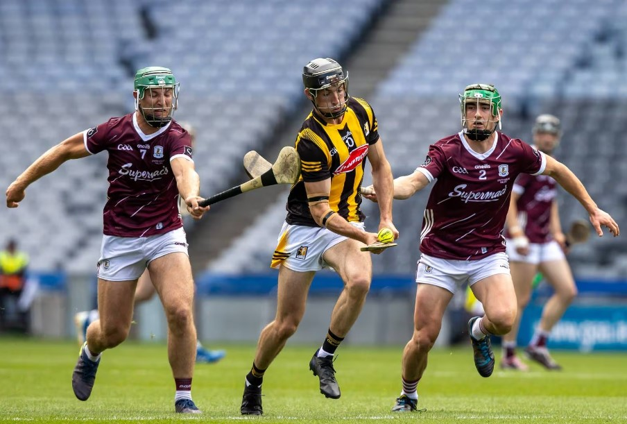
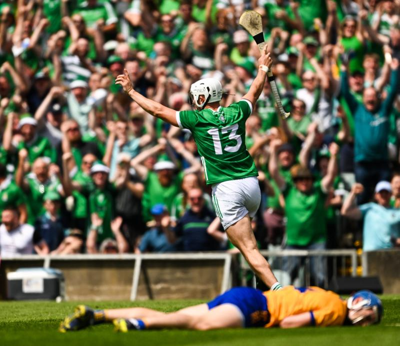

As the summer sun illuminates the rolling hills of Leinster, anticipation builds for one of hurling's most exhilarating competitions:
the Leinster Hurling Championship. With a backdrop of rich heritage and a tradition steeped in skill and passion, this year's championship promises to showcase the very essence of hurling excellence. Join us as we delve into the teams, key matchups, and players set to dazzle the stage in the 2024 Leinster Hurling Championship.
Its important to point out the structure of this tournanment differs from the footabll championship. Every team plays each other once with the top two in the group play in a provincial final.
Contenders And Dark Horses
The Leinster Hurling Championship boasts a formidable lineup of contenders, with perennial powerhouses such as Kilkenny, Galway and Dublin leading the charge.
Reigning champions Kilkenny, with their storied history and unparalleled success, enter the championship as the team to beat.
However, challengers like Galway, fuelled by a hunger to reclaim past glories, and Dublin, buoyed by a resurgence in form, are determined to challenge Kilkenny's supremacy and stake their claim for championship honours.
Key Matchups to Watch
The draw for the Leinster Hurling Championship sets the stage for a series of gripping clashes, pitting traditional rivals and emerging contenders against each other.
Among the most eagerly anticipated matchups is the showdown between arch-rivals Kilkenny and Wexford, a fixture steeped in history and passion.
Expect sparks to fly as these two titans of Leinster hurling renew their age-old rivalry in a battle for provincial supremacy.
Meanwhile, clashes between Dublin and Galway, as well as Carlow and Antrim, are also set to ignite the championship, with both matchups promising intense competition and high-stakes drama.
Dark horses such as Carlow and Antrim will also be looking to make their mark, eager to upset the established order and make a deep run in the championship.
Players to Watch
The Leinster Hurling Championship is renowned for showcasing the talents of hurling's brightest stars, and this year is no exception.
Keep an eye on players like TJ Reid (Kilkenny), Conor Whelan (Galway), and Donal Burke (Dublin), whose skill, leadership,
and match-winning abilities could prove decisive in their team's quest for championship glory.
As anticipation reaches fever pitch and excitement fills the air, the stage is set for another unforgettable edition of the Leinster Hurling Championship.
With fierce rivalries, top-class talent, and the promise of unforgettable moments, the 2024 championship is sure to captivate audiences and reaffirm its status as one of the premier competitions
in hurling.

Galway’s Fintan Burke and Jack Grealish with Tom Phelan of Kilkenny.
As the gentle breeze dances over the rolling hills of Munster, excitement abounds for one of hurling's most revered competitions: the Munster Hurling Championship.
With a backdrop of stunning landscapes and a tradition steeped in skill and enthusiasm, this year's championship promises to captivate fans and showcase the very essence of hurling mastery.
Join us as we explore the teams, key matchups, and players poised to light up the stage in the 2024 Munster Hurling Championship.
Contenders And Dark Horses
The Munster Hurling Championship boasts a formidable lineup of contenders, with perennial powerhouses such as Tipperary, Clare, and Limerick leading the charge.
Reigning champions Limerick, with their blend of experience and youthful exuberance, enter the championship as the team to beat.
However, challengers like Tipperary, fuelled by a desire to reclaim past glories, and Clare, buoyed by a resurgence in form, are determined to challenge Limerick's dominance and
stake their claim for championship honours.
Key Matchups to Watch
The draw for the Munster Hurling Championship sets the stage for a series of captivating clashes, pitting traditional rivals and emerging contenders against each other.
Among the most eagerly anticipated matchups is the showdown between arch-rivals Tipperary and Cork, a fixture steeped in history and passion.
Expect fireworks as these two titans of Munster hurling renew their age-old rivalry in a battle for provincial supremacy.
Meanwhile, clashes between Limerick and Clare, as well as Waterford and Cork, are also set to ignite the championship, with both matchups promising intense competition and high-stakes drama.
Dark horses such as Cork and Waterford will also be looking to make their mark, eager to upset the established order and make a deep run in the championship.
Players to Watch
The Munster Hurling Championship is renowned for showcasing the talents of hurling's brightest stars, and this year is no exception.
Keep an eye on players like Jake Morris (Tipperary), Patrick Horgan (Cork), and Aaron Gillane (Limerick), whose skill, leadership, and match-winning abilities could prove decisive in their team's quest for championship glory.
Emerging talents such as Adam Hogan (Clare), Ciaran Joyce (Cork), and Mark Rodgers (Clare) will also be worth watching, as they look to make a name for themselves on the championship stage.
As anticipation reaches fever pitch and excitement fills the air, the stage is set for another unforgettable edition of the Munster Hurling Championship.
With fierce rivalries, top-class talent, and the promise of unforgettable moments, the 2024 championship is sure to captivate audiences and reaffirm its status as one of the premier
competitions in hurling.

Aaron Gillane celebrates after scoring a second half goal for Limerick in Sunday's Munster SHC final clash with Clare at the TUS Gaelic Grounds.